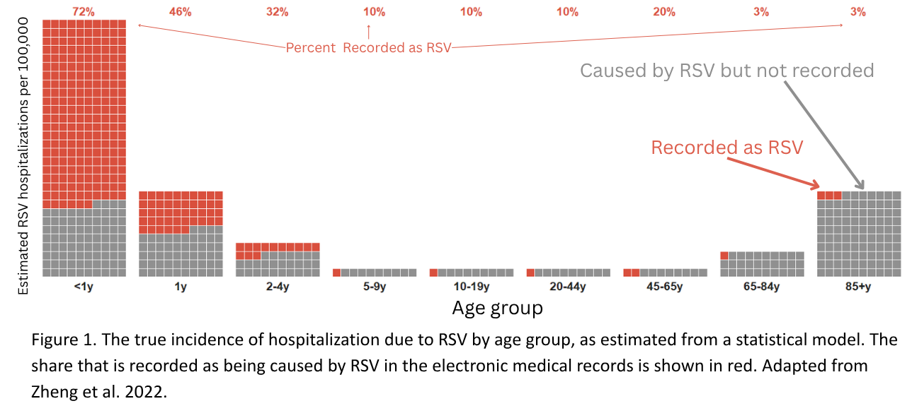
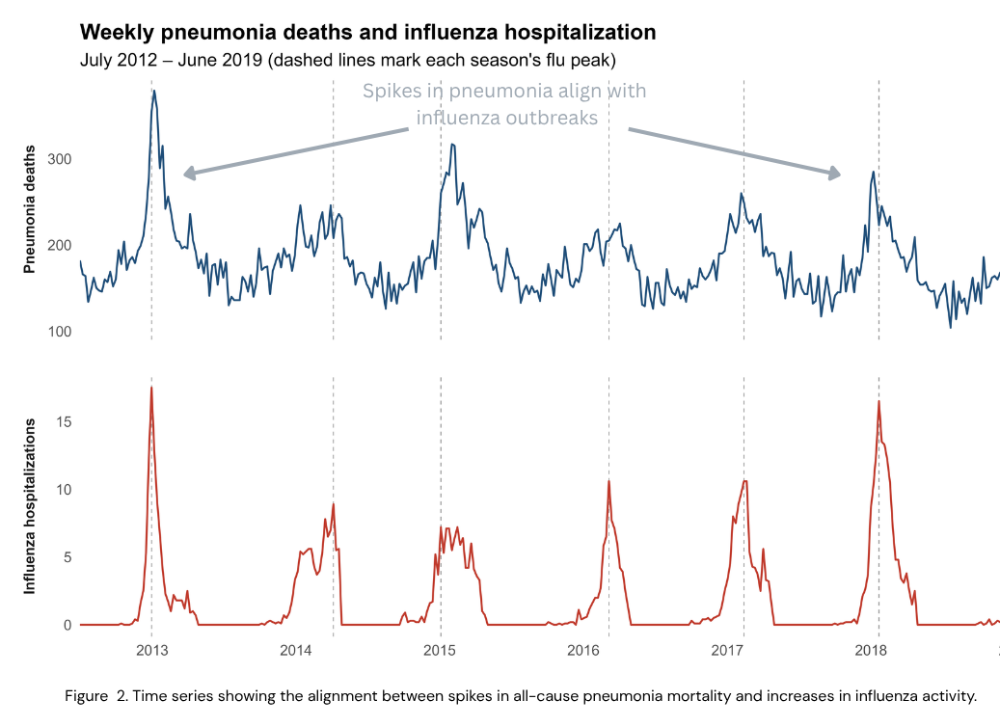
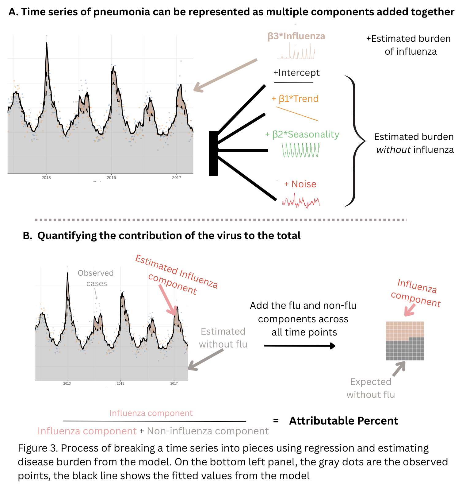

How to Estimate the Burden of Disease Caused by Respiratory Viruses from Time Series Data
Introduction
Accurate estimates of disease burden are essential for policy makers.
Quantifying the burden of disease caused by different pathogens is a core task in public health and is essential for policy makers. Decisions about prioritizing different vaccine programs or other preventive investments are often based on the burden of disease and the cost effectiveness of the interventions. This is particularly important for public health decisions targeting specific outcomes, like vaccines. If the burden is not correctly captured, the resulting decisions about population health will be inadequate.
Unfortunately, estimating the burden of disease directly from routinely collected data is not reliable. Most individuals seeking healthcare for an infection are not tested for a specific microbe. As a result, the number of cases of disease caused by individual pathogens and captured by surveillance systems often represents a substantial undercount [1,2,3,4]. For example, with respiratory syncytial virus (RSV), many of the children presenting to the hospital or emergency department with respiratory symptoms during the winter virus season will get tested for RSV, and those children’s illnesses will be correctly attributed to the virus (Figure 1). In adults, however, testing for RSV is much less common. Even when tested, the amount of the virus tends to be lower in adults, reducing the sensitivity of the tests and further leading to underdetection of infected individuals [5,6]. As a result, fewer than 5% of people who actually have an illness caused by RSV have the virus correctly recorded as a contributing cause in their clinical records (Figure 1, [1,7,8]). Instead, unspecified viral pneumonia or respiratory infection could be recorded, contributing to underestimation of disease burden [9,10]. This underdetection has been confirmed in a number of settings and using distinct methodologies [1,11,12,13,14,15].

The goal of this article is to provide clinical and policy experts with an overview and understanding of some of the commonly used statistical models for estimating the burden of disease caused by specific pathogens. We discuss how certain types of statistical models can be used to estimate the burden of disease caused by viral pathogens by coupling pathogen-specific data with data on non-specific outcomes like pneumonia. We provide an intuition for how these analyses work, discuss issues to be aware of when evaluating the rigor of these types of studies, and consider the validity of these estimates in relation to traditional clinic-based estimates.
Approaches to estimate the burden of disease due to specific pathogens
To estimate the gap between the true burden of disease and the number of reported cases, a number of approaches have been employed. Many of these methods involve intensive and systematic laboratory testing of clinical cases to obtain active, population-based estimates of incidence. For instance, to infer the pathogen responsible for pediatric deaths, a multi-country study performed minimally invasive sampling of a systematic sample of children who die from infections, and test for a large set of pathogens [4]. Likewise a study in the United States (US) comprehensively tested adults with pneumonia to estimate the burden of disease caused by RSV and other respiratory viruses [1]. Another large multi-country study tested pneumonia cases and healthy controls for bacteria and viruses, and the comparisons between cases and controls were used to infer burden [16]. The inclusion of controls was essential in that study to ensure that the detected viruses and bacteria were causally related to the symptoms and not incidentally detected. These clinical studies provide essential and high-quality data on the specific pathogens that cause disease and death. However, this type of active population-based study is costly to conduct and requires localized infrastructure and expertise. Therefore it is challenging to scale over time and across many different locations. There is a need to conduct burden studies in different locations because the specific distribution of pathogens and the relative importance of bacterial and viral pathogens can differ by setting based on numerous local factors. Some studies attempt to fill in the gaps in locations without high quality clinical studies by using statistical models to extrapolate estimates using data from locations where disease burden data have been collected. These types of approaches are frequently used in studies of the global burden of disease [17,18,19]. Other approaches try to correct for known biases in testing and detection while extrapolating from recorded rates of disease [20].
Statistical models can also be used to more directly estimate the burden of disease caused by specific pathogens in locations where comprehensive data are collected for hospital billing or vital statistics. These analyses, which will be the focus of this commentary, evaluate how variations over time in a non-specific outcome, like all-cause pneumonia, correlate temporally with variations in the activity of specific pathogens known to cause pneumonia, like influenza or RSV. Statistical models can be used to estimate how much of the winter increase in pneumonia is above what we typically see every winter and how much of that extra increase aligns with influenza activity. These analyses assume that the true burden of disease caused by specific pathogens can be recovered by studying the similarities in the trends between these signals and estimating the association between them. This methodology has been used extensively for influenza and for RSV [21,22,23].
How do estimates from clinical studies compare with statistical estimates?
A key question with any statistical method is whether it produces accurate estimates. We can assess this by comparing estimates of burden obtained from statistical models with estimates of burden from intensive sampling in the same population. For example, we previously used statistical models to estimate the burden of respiratory hospitalizations in New York State that could be attributed to RSV. We estimated ~180 RSV hospitalizations/100,000 among adults 65+ years of age (Table S7 in [24]). This is comparable in magnitude to a clinical study in which investigators tested all pneumonia patients for RSV over three seasons in two locations in New York and found an estimated incidence of 137-256 RSV hospitalizations per 100,000 people [1]. This agreement across studies was further supported by a recent systematic literature review and meta-analysis that found comparable estimates of the burden of RSV across both clinical studies and those using statistical methods [25]. The close correspondence of these estimates from different methods supports the validity of the statistical approaches.
What data do you need to estimate disease burden from aggregate data?
In this article, we will focus on a specific set of statistical methods that rely on the analyses of ‘time series’ data. Time series data are simply a sequence of measurements collected over time. Examples of time series data include the number of cases of pneumonia hospitalizations per week or the percent of nasopharyngeal swabs that test positive for influenza per week. To estimate burden using time series, we analyze trends shared between broad, non-specific outcomes (like all-cause pneumonia), and pathogen-specific outcomes (like positive tests for RSV). We define a mathematical formula that relates these time series and provides an estimate for how changes in the pathogen-specific time series relate to changes in the non-specific outcome. This can provide a more complete estimate of the burden of those specific pathogens.
To carry out these analyses, there are two required data components. The first is a time series for a broad non-specific outcome, like hospitalizations for all-cause pneumonia or deaths due to all-cause cardiopulmonary events. The cases that are aggregated into the time series can be identified in different ways. Most commonly, diagnostic codes (e.g., International Classification of Disease, 10th revision codes, or ICD-10 codes) in healthcare or vital statistics databases are used. For instance, one could tally the number of weekly hospitalizations that have a diagnostic code representing pneumonia listed on the record (e.g., J12-J18). This non-specific time series could consist of cases caused by the specific pathogen we are interested in as well as a number of other pathogens.
The second requirement is a tally of pathogen-specific activity in the population during the same time period. This should be a measure that reflects the intensity of circulation of the specific pathogen of interest, but is not necessarily a direct measure of burden for the population of interest. For example, this could be the number of lab-confirmed influenza tests by week, or it could be the number of healthcare visits with an ICD-10 code for influenza. These data could be drawn from public health surveillance data, or it could be obtained directly from healthcare databases. This ‘proxy’ measure of viral activity could be collected from the same age group or demographic group as the outcome, but it does not necessarily need to be. For instance for RSV, due to the severe undertesting of RSV in adults, using a measure of RSV intensity from young children or the overall population might provide a more accurate proxy measure.
Breaking a time series into pieces to estimate disease burden
Let’s imagine that we know the number of hospitalizations due to pneumonia in each week in a specific population (e.g., region, age group, socioeconomic group). Looking across multiple years, we typically observe some repeating patterns, with increases in hospitalization in the winter months, and occasional short-term spikes and dips in the number of pneumonia hospitalizations above and below the typical seasonal trends (Figure 2). These short-term variations could be due, in part, to variations in the circulation of specific pathogens. Longer term, the numbers of hospitalizations recorded as being caused by pneumonia could increase or decrease due to changes in definitions or diagnostics, changes in demographics, changes in environmental conditions (e.g., air pollution), or changes in the underlying health of the population (e.g., chronic disease prevalence).
The importance of different pathogens in contributing to these patterns can differ over the course of a season. For instance, at the height of winter, more of the cases will be due to influenza or RSV. The contributions from these viruses can often be seen in the time series as increases above a typical seasonal average. For instance, weekly pneumonia deaths in the US (Figure 2, upper panel) have broad seasonal variations, and in a severe flu season, there are clear increases above that seasonal average that line up with the spikes in influenza activity, as recorded by positive viral tests (Figure 2, lower panel).

To understand how these types of statistical analyses work, we will use a simulated time series of pneumonia deaths (Figure 3). This time series is comprised of:
- The average number of cases, which shifts the time series up or down (Intercept)
- An underlying trend, with deaths decreasing over the years (e.g., a straight line decrease)
- Winter seasonal variation, which could be due to variations in social contact, meteorological factors, and other pathogens that vary seasonally in a consistent way when added together
- Increases related to influenza
- Unexplained short-term variation (“noise”). This variation cannot be described by the previously mentioned factors (i.e., trend, seasonality) and it assumes that when one week has unusually high activity, the next week is also likely to be unusually high. This is called ‘autocorrelation.’ This unexplained variation can occur if there are missing covariates in the model, or if other underlying assumptions about the data are incorrect
When these components are added together, we get the full time series. The goal for statistical models used for burden estimation is to work backwards. We take the pneumonia time series and estimate the contribution of each of these components using a mathematical formula; typically within a regression framework. This analysis can provide an estimate for how much pneumonia we would expect if there had not been an increase in influenza activity, and from this we can estimate how much of the total burden of pneumonia is due to influenza.
In the regression, the outcome variable (\(Y_t\)) is the number of pneumonia cases or deaths in each week. Covariates (\(X_t\)) include a variable describing influenza activity, a time trend to capture long-term increases or decreases, a variable that captures season-to-season variation, and the unexplained short-term variation (“noise”). This can be written generically as:
\[ \text{Expected pneumonia cases at week } t: \quad E(Y_t) = \beta_0 + \beta_1 \cdot \text{Trend}_t + \beta_2 \cdot \text{Seasonality}_t + \beta_3 \cdot \text{Influenza}_t + \text{Noise}_t \]

The regression model estimates the intercept, which gives the average number of cases during the study period, and the relative contributions of trend, seasonality, and influenza (\(\beta_0, \beta_1, \beta_2, \beta_3\), respectively) (Figure 3A). The \(\beta_3\) parameter acts as a multiplier that connects the influenza activity to the pneumonia time series and is the key part of the model for understanding what influenza may look like in the absence of flu activity. By including both seasonality (\(\beta_2\)) and the influenza variable in the model, we can more accurately estimate how much of the variability in pneumonia rates is due to influenza and how much is due to typical seasonal variation. If the seasonal term is omitted from the model, then the model would incorrectly estimate that much of the seasonal variation is due to influenza, and \(\beta_3\) would be poorly estimated. A similar effect would be seen when the trend is not included in the model, particularly if the influenza variable had a similar long-term trend.
Using the model to calculate attributable burden
Once we have fitted the regression, we have estimates (and measures of uncertainty) for \(\beta_0\)–\(\beta_3\) that can be used to estimate the percent of pneumonia burden that is caused by influenza. We do so by setting the influenza activity at each week to 0 in the equation below and therefore, predict how many pneumonia cases we would expect in the absence of any influenza activity:
\[ \text{Expected pneumonia cases at week } t \text{ without influenza}: \quad E(Y_{0t}) = \beta_0 + \beta_1 \cdot \text{Trend}_t + \beta_2 \cdot \text{Seasonality}_t + \beta_3 \cdot 0 + \text{Noise}_t \]
We can then summarize the difference between the fitted value and the predicted value without influenza, with the area between the plotted values representing the expected contribution from influenza (Figure 3B). We can also calculate the percent of the total predicted value that is attributed to influenza, or the attributable percent:
\[ \text{Attributable percent} = \frac{E(Y_{1t}) - E(Y_{0t})}{E(Y_{1t})} \times 100\% \]
Likewise we could calculate the attributable incidence as:
\[ \text{Attributable incidence} = \frac{E(Y_{1t}) - E(Y_{0t})}{\text{Population}} \]
The attributable percent and attributable incidence can be calculated at each time point or can be aggregated over multiple time points by summing \(E(Y_{1t})\) and \(E(Y_{0t})\) before calculating the quantities. Using these types of calculations, it is possible to make statements like “based on the model, 10% of pneumonia cases were attributed to influenza”. Importantly, because a statistical model was used for estimation, measures of uncertainty for these quantities, such as confidence intervals, can also be derived and used in interpretation. More details about these approaches and considerations for implementation can be found in the Technical Appendix.
Conclusions
Time series models provide information that is complementary to intensive clinical methods for estimating the impact of specific viruses on the burden of pneumonia or other non-specific outcomes. Because many clinical cases are not tested for specific microbes, this type of attribution analysis can provide a more complete picture of the burden of disease caused by specific bacteria or viruses. While the highest standard of evidence comes from clinical studies that involve intensive testing, statistical methods like time series analysis often provide similar estimates to those derived from high-quality clinical data when they are available for comparison. Statistical approaches provide a scalable solution that can be used in many different locations.
Funding and Disclosures
This work was funded by contracts from Pfizer to DMW and JLW and was completed independent of their duties at Yale University. The funders were involved in developing the concept for the paper and providing feedback on the drafts. The authors were fully responsible for writing, analysis, and editorial decisions.
Outside of this work, DMW has received consulting fees from Pfizer, Merck, GSK, and Vaxcyte and has been principal investigator on research grants from Pfizer, Merck, and GSK to Yale University, while JLW has received consulting fees from Pfizer.
References
- Branche AR, Saiman L, Walsh EE, Falsey AR, Sieling WD, Greendyke W, et al. Incidence of Respiratory Syncytial Virus Infection Among Hospitalized Adults, 2017-2020. Clin Infect Dis. 2022;74: 1004–1011.
- Ebruke BE, Deloria Knoll M, Haddix M, Zaman SMA, Prosperi C, Feikin DR, et al. The Etiology of Pneumonia From Analysis of Lung Aspirate and Pleural Fluid Samples: Findings From the Pneumonia Etiology Research for Child Health (PERCH) Study. Clin Infect Dis. 2021;73: e3788–e3796.
- Scheltema NM, Gentile A, Lucion F, Nokes DJ, Munywoki PK, Madhi SA, et al. Global respiratory syncytial virus-associated mortality in young children (RSV GOLD): a retrospective case series. Lancet Glob Health. 2017;5: e984–e991.
- Mahtab S, Madhi SA, Baillie VL, Els T, Thwala BN, Onyango D, et al. Causes of death identified in neonates enrolled through Child Health and Mortality Prevention Surveillance (CHAMPS), December 2016 - December 2021. PLOS Glob Public Health. 2023;3: e0001612.
- Onwuchekwa C, Moreo LM, Menon S, Machado B, Curcio D, Kalina W, et al. Underascertainment of Respiratory Syncytial Virus Infection in Adults Due to Diagnostic Testing Limitations: A Systematic Literature Review and Meta-analysis. J Infect Dis. 2023;228: 173–184.
- Begier E, Aliabadi N, Ramirez JA, McGeer A, Liu Q, Carrico R, et al. Detection by Nasopharyngeal Swabs Alone Underestimates Respiratory Syncytial Virus-Related Hospitalization Incidence in Adults: The Multispecimen Study’s Final Analysis. J Infect Dis. 2025;232: e126–e136.
- Falsey AR, Hennessey PA, Formica MA, Cox C, Walsh EE. Respiratory syncytial virus infection in elderly and high-risk adults. N Engl J Med. 2005;352: 1749–1759.
- Rozenbaum MH, Judy J, Tran D, Yacisin K, Kurosky SK, Begier E. Low Levels of RSV Testing Among Adults Hospitalized for Lower Respiratory Tract Infection in the United States. Infect Dis Ther. 2023;12: 677–685.
- Cai W, Tolksdorf K, Hirve S, Schuler E, Zhang W, Haas W, et al. Evaluation of using ICD-10 code data for respiratory syncytial virus surveillance. Influenza Other Respi Viruses. 2020;14: 630–637.
- Egeskov-Cavling AM, Johannesen CK, Lindegaard B, Fischer TK. Underreporting and Misclassification of Respiratory Syncytial Virus-Coded Hospitalization Among Adults in Denmark Between 2015-2016 and 2017-2018. The Journal of infectious diseases. 2024;229. doi:10.1093/infdis/jiad415
- Zheng Z, Warren JL, Shapiro ED, Pitzer VE, Weinberger DM. Estimated incidence of respiratory hospitalizations attributable to RSV infections across age and socioeconomic groups. Pneumonia (Nathan). 2022;14: 6.
- Casas M, Liang C, Molden T, Bruyndonckx R, Esnaola M, Basu S, et al. Estimated Incidence of Hospitalisations and Deaths Attributable to Respiratory Syncytial Virus Infections in Adults in Norway between 2010 and 2019: A Time-Series Modelling Study. J Epidemiol Glob Health. 2025;15: 107.
- Bruyndonckx R, Polkowska-Kramek A, Liang C, Kosunen M, Hätinen O-P, Esnaola M, et al. Estimated Incidence of All-Cause Respiratory Hospitalizations and Deaths Attributable to Respiratory Syncytial Virus Infections in Adults in Finland between 2011 and 2019: A Retrospective Database Study. J Epidemiol Glob Health. 2026;16: 7.
- Liang C, Polkowska-Kramek A, Lade C, Bayer LJ, Bruyndonckx R, Huebbe B, et al. Estimated Incidence Rate of Specific Types of Cardiovascular and Respiratory Hospitalizations Attributable to Respiratory Syncytial Virus Among Adults in Germany Between 2015 and 2019. Influenza Other Respir Viruses. 2025;19: e70097.
- Haeberer M, Bruyndonckx R, Polkowska-Kramek A, Torres A, Liang C, Nuttens C, et al. Estimated Respiratory Syncytial Virus-Related Hospitalizations and Deaths Among Children and Adults in Spain, 2016-2019. Infect Dis Ther. 2024;13: 463–480.
- O’Brien KL, Baggett HC, Brooks WA, Feikin DR, Hammitt LL, Higdon MM, et al. Causes of severe pneumonia requiring hospital admission in children without HIV infection from Africa and Asia: the PERCH multi-country case-control study. Lancet. 2019;394: 757–779.
- Antillón M, Warren JL, Crawford FW, Weinberger DM, Kürüm E, Pak GD, et al. The burden of typhoid fever in low-and middle-income countries: A meta-regression approach. PLoS Negl Trop Dis. 2017;11: e0005376.
- Phillips MT, Meiring JE, Voysey M, Warren JL, Baker S, Basnyat B, et al. A Bayesian approach for estimating typhoid fever incidence from large-scale facility-based passive surveillance data. Stat Med. 2021;40: 5853–5870.
- GBD 2023 Causes of Death Collaborators. Global burden of 292 causes of death in 204 countries and territories and 660 subnational locations, 1990-2023: a systematic analysis for the Global Burden of Disease Study 2023. Lancet. 2025;406: 1811–1872.
- Zhang T, Reeves RM, Ma S, Miao Y, Sun S, Orrico-Sánchez A, et al. Estimating the respiratory syncytial virus-associated hospitalisation burden in older adults in European countries: a systematic analysis. BMC Med. 2025;23: 453.
- Dushoff J, Plotkin JB, Viboud C, Earn DJD, Simonsen L. Mortality due to influenza in the United States–an annualized regression approach using multiple-cause mortality data. Am J Epidemiol. 2006;163: 181–187.
- Thompson WW, Shay DK, Weintraub E, Brammer L, Cox N, Anderson LJ, et al. Mortality associated with influenza and respiratory syncytial virus in the United States. JAMA. 2003;289: 179–186.
- Zhou H, Thompson WW, Viboud CG, Ringholz CM, Cheng P-Y, Steiner C, et al. Hospitalizations Associated With Influenza and Respiratory Syncytial Virus in the United States, 1993–2008. Clin Infect Dis. 2012;54: 1427–1436.
- Xu H, Pitzer VE, Warren JL, Shapiro ED, Perniciaro S, Weinberger DM. Estimating the burden of RSV- and influenza-associated ED visits, hospitalizations, ICU admissions, and deaths across age and socioeconomic groups in New York State, 2005-2019. BMC Infect Dis. 2026;26. doi:10.1186/s12879-026-12574-6
- McLaughlin JM, Khan F, Begier E, Swerdlow DL, Jodar L, Falsey AR. Rates of Medically Attended RSV Among US Adults: A Systematic Review and Meta-analysis. Open Forum Infect Dis. 2022;9: ofac300.
Technical Appendix
Distinguishing the contribution of a virus from seasonal variation
With influenza, the intensity and timing of the epidemic varies considerably year-to-year. Therefore, it is typically straightforward to disentangle the effect of influenza from seasonal variations that are not caused by influenza. Some other pathogens show less year-to-year variability in epidemic timing or intensity, making it more challenging to accurately estimate the effect of the virus. This can sometimes be seen during the model fitting process as having either seasonal factors or viral terms that are unstable or have high levels of uncertainty. In these situations, it can sometimes be helpful to simultaneously model data from multiple regions or age groups that might have different seasonal patterns. It can also be helpful to explore lags between the virus and the pneumonia time series and to explore different ways to capture the consistent seasonal variations (e.g., harmonics vs. penalized splines).
Dealing with changes in diagnostics
Attribution models typically assume that the association between the viral indicator and pneumonia is stable over time. However, for many viruses, the use of laboratory diagnostics changed dramatically in the period after the COVID-19 pandemic. Ignoring this change will likely lead to under-estimation of the contribution of the virus. If data on viral testing volumes over time are available, this can be used to detrend the data. Another possible solution is to take a 12 month moving average of viral testing volumes and use this to adjust the number of positive tests. This avoids inappropriately removing some of the seasonal variation while still adjusting for the long-term trends. If testing data are not available, other model-based approaches to detrending the data could be considered.
Time resolution
Ideally, these types of analyses should be conducted using weekly data. This allows the model to leverage maximum levels of variability in viral activity. It is often possible, however, to conduct robust analyses with monthly data, though it is sometimes more difficult to disentangle the effects of the virus from seasonal variation with monthly data (see previous section). Quarterly data will not be sufficient for analysis in most settings, with the exception of extreme events like the emergence of a pandemic virus.
Additive vs multiplicative models
In the example from the main text, a negative binomial regression model with identity link function was used to estimate the contribution of each component, such that the components were added together to obtain the expected number of pneumonia cases. In many studies, a log-link function is used instead such that the components are added together on the scale of log(cases) rather than on the original scale of the pneumonia cases. While this specification naturally accommodates the requirement that expected counts are larger than zero, it changes the interpretation of the regression coefficients compared to the identity link and can impact estimation of the attributable percent and incidence. Careful consideration about the appropriate analysis scale prior to analysis is important for selecting the best option, though model comparison tools can sometimes be useful as a data-driven technique for making this choice. Fitting count-based models with the identity link is technically more complicated and can require specialized software (e.g., JAGS for Bayesian analyses).
Reporting results
The goal for attribution studies is typically to estimate the contribution of a virus to the burden of pneumonia, not to test whether there is an association between the virus and pneumonia. As a result, results should cite estimates of attributable percent and attributable incidence with measure of uncertainty (e.g., a 95% confidence intervals) instead of reporting inference for the associations between the virus and pneumonia time series.
Autocorrelation
Many attribution models ignore residual autocorrelation. Often after accounting for seasonality, viral activity, and trends, there is little meaningful residual autocorrelation in the data. However, when significant autocorrelation is present, it is important to explicitly model it to ensure accurate uncertainty measures for the estimates of interest. However, results from such an analysis should be carefully reviewed as the inclusion of autoregressive random effects can sometimes impact estimation and inference for other variables in the model.
How much does model structure matter?
As discussed, there are many decisions an analyst needs to make when building the regression models described here. For example, what distributional assumptions align most closely with the observed data (Poisson vs. negative binomial, choice of link function, etc.), how to adjust for underlying trends, how to control for seasonality, and whether or not to directly model residual autocorrelation. The degree to which these decisions impact the final estimate and inference for the attributable percent will depend on the specific dataset. It is therefore a good idea to run ample sensitivity analyses to demonstrate the robustness of the results to model structure and to have a pre-specified plan in place for deciding among different models. Once the general structure of the model is determined (i.e., which components are important to include, informed by the sensitivity analyses described above), model comparison tools (e.g., Akaike information criterion) can be useful for selecting the most appropriate functional form for each component in the model. However, model fit alone is an incomplete guide as many competing methods can yield similar fit to the data but different counterfactual estimates and inference. For this reason, we generally prefer parsimonious models over alternatives that may offer increased flexibility at the cost of interpretation.
As an example, we first fit a negative binomial regression model to the observed data from the main text, using the identity link function, categorical year variable to capture trend, categorical month variable to describe seasonality, linear influenza activity variable, and autocorrelated (of order 1) random effects to account for time series correlation. This model was selected based on comparing different versions of the model with alternative definitions and transformations for the included variables (e.g., linear vs. categorical, no random effects, etc.). Parameter estimates from this model were then treated as the “truth”, and a new dataset was simulated from the fitted model for analysis. Using the simulated data, we fit the ‘correct’ model to the data (i.e., the model that matches the data generating process for the simulated data), and then fit an alternative model where we adjusted for trend and seasonality in a more crude way (using quarterly vs. monthly categorical variables and using linear vs. categorical year trend), used the log link function instead of the identity link, and did not account for residual autocorrelation. In this example, the attributable percent for the correct model was estimated to be 3.97% (2.98 - 4.97), while the attributable percent over the entire study period for the mis-specified model was 5.26% (4.47 - 6.05). In this example the difference in the attributable percents is modest, and the conclusion does not appreciably change. Results in Figure 3 from the main text are based on fitting the correct model to these simulated data.